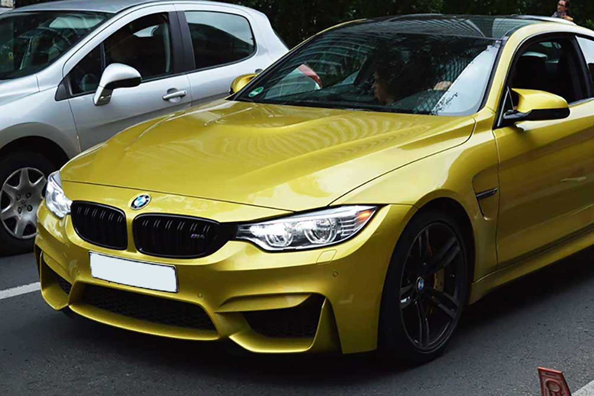
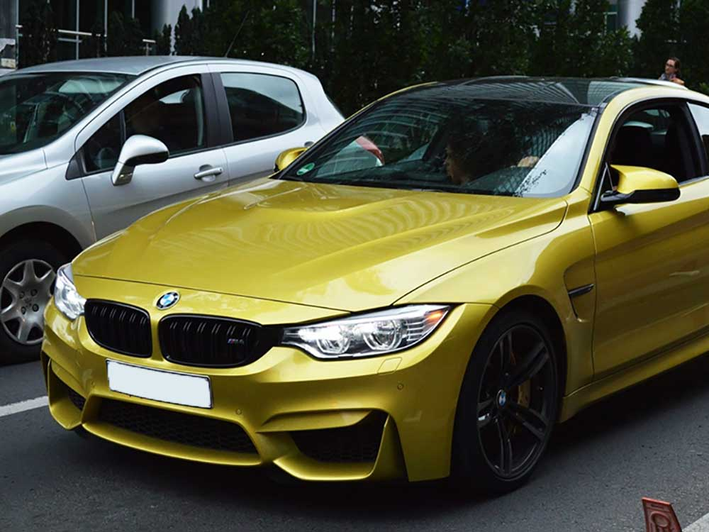
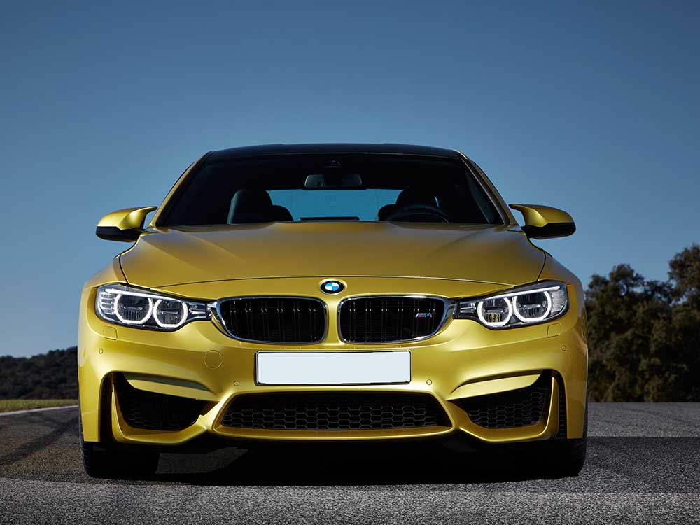
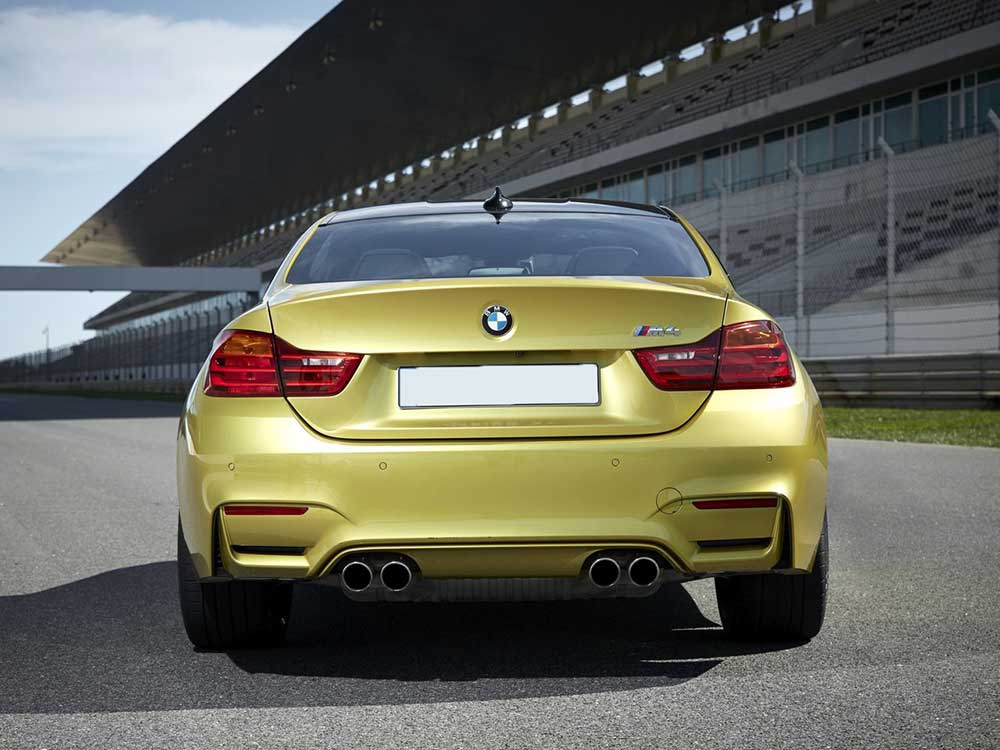
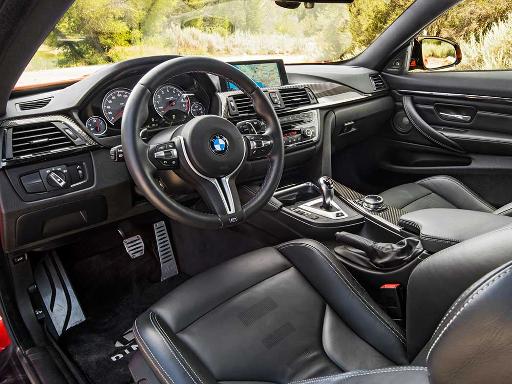
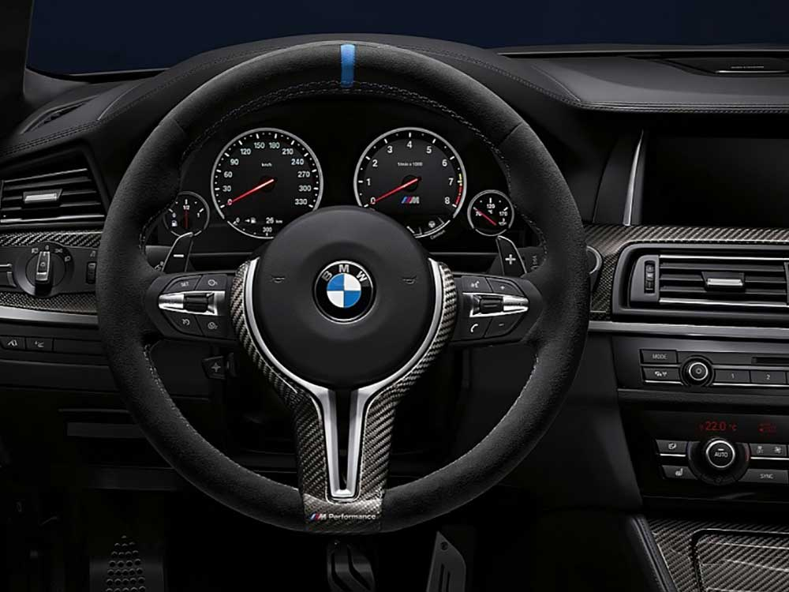
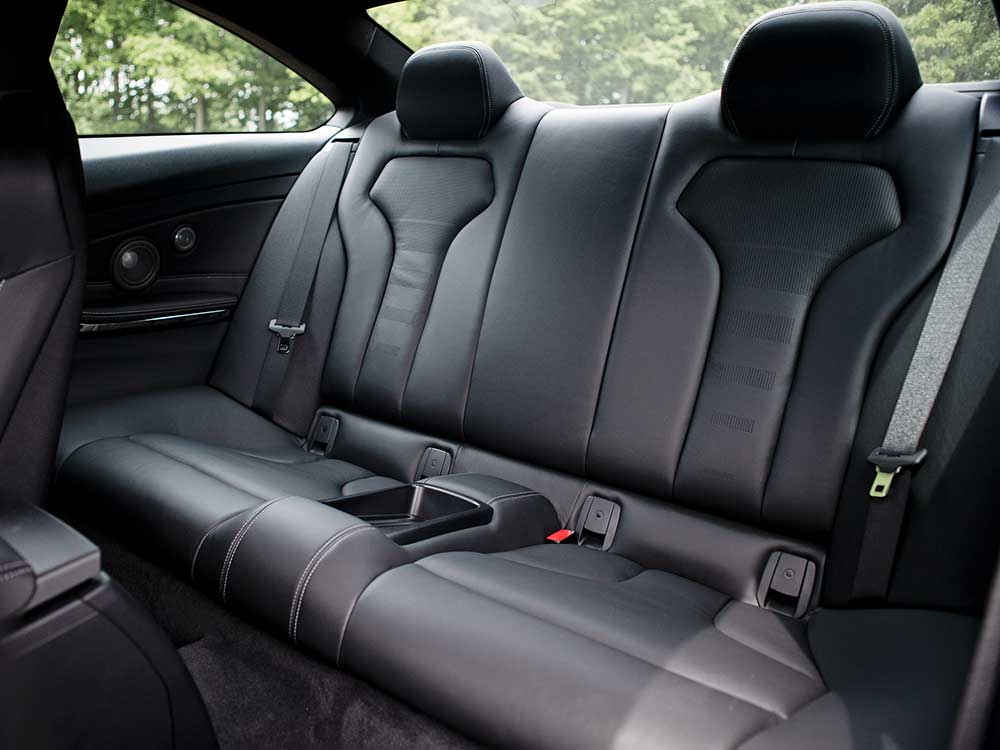

НАЗАД







от 5 920 000 руб.
Комплектации
| Комплектация | Цена*,руб. | Объем мотора, руб. | Тип топлива | Мотор, л.с. | КПП | Привод | Смеш. цикл,л (расход) | Разгон до 100 км/ч, сек |
|---|---|---|---|---|---|---|---|---|
| 3.0 MT | 4 790 000 | 3.0 | АИ-95 | 431 | MКПП | задний | 8.8 | 4.3 |
| 3.0 AMT | 5 122 000 | 3.0 | АИ-95 | 431 | робот | задний | 8.3 | 4.1 |
| 3.0 MT Competition | 5 760 000 | 3.0 | АИ-95 | 450 | МКПП | задний | 8.8 | 4.3 |
| 3.0 AMT Competition | 6 092 000 | 3.0 | АИ-95 | 450 | робот | задний | 8.3 | 4 |
| 3.0 AMT CS | 7 130 000 | 3.0 | АИ-98 | 460 | робот | задний | 8.4 | 3.9 |
Аннонимные отзывы владельцев
немцы продумали все до мелочей, машина умная, всегда говорит что ей и когда нужно,
очень нравится панель на в спидометре туда можно переключить музыку, навигатор, телефон...
Особенно хочу выделить голосовую связь звонков через блютуз, первая машина в которой меня стало лучше слышно
чем через телефон, во всех предыдущих машинах не мог толком говорить через машину, всегда были помехи, здесь одно удовольствие.
хороший и практичный автомобиль, в котором удобно ездить и по городу , и в дальние поездки
Эта машина мечта, которая сбывается.
Кто из нас не мечтал прокатится на этом быстром, надежном авто. В нем есть все что
есть у современного авто транспортного средства. Его начинка это последние новейшие
технологии безопасности, экономичности, эколоничности а так же комфорта. Железный конь
для представителей человеческой рассы, которые любят прокатится с ветерком по просторам
своей родины. Одно из достопримечательностей этой машины является пожалуй дизайн кузова.
Сама посадка и внешний вид схожий с хищным зверем, который без устоли способен двигатся преодолевая
огромные расстояни. бмв имеет более широкий выбор двигателей, так что при покупке
старайтесь взять машину посвежее.